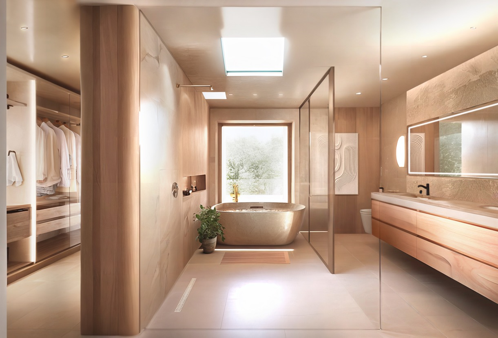

Roman concrete, or opus caementicium, allowed architects to break free from post-and-lintel limitations. It enabled vaults, domes, and massive interior spaces that redefined architectural possibility across the empire.
